| Season | Pol. | Correction | Mowed | Not mowed | Cohen's d | p-value |
|---|---|---|---|---|---|---|
| Early (Apr-May) | VV | Raw | 0.264 | 0.282 | −0.126 | 0.482 |
| Early (Apr-May) | VV | SNR-corr. | 0.285 | 0.299 | −0.092 | 0.310 |
| Early (Apr-May) | VH | Raw | 0.311 | 0.316 | −0.034 | 0.531 |
| Early (Apr-May) | VH | SNR-corr. | 0.394 | 0.381 | 0.070 | 0.144 |
| Peak (Jun-Jul) | VV | Raw | 0.266 | 0.293 | −0.176 | 0.968 |
| Peak (Jun-Jul) | VV | SNR-corr. | 0.284 | 0.307 | −0.144 | 0.878 |
| Peak (Jun-Jul) | VH | Raw | 0.296 | 0.311 | −0.104 | 0.700 |
| Peak (Jun-Jul) | VH | SNR-corr. | 0.362 | 0.365 | −0.013 | 0.181 |
| Late (Aug-Oct) | VV | Raw | 0.259 | 0.270 | −0.077 | 0.341 |
| Late (Aug-Oct) | VV | SNR-corr. | 0.282 | 0.283 | −0.007 | 0.113 |
| Late (Aug-Oct) | VH | Raw | 0.327 | 0.315 | 0.084 | 0.021 |
| Late (Aug-Oct) | VH | SNR-corr. | 0.427 | 0.373 | 0.307 | 0.000 |
4 Results
4.1 Interferometric Coherence and SNR Correction Analysis
Table 4.1 summarises the mean coherence values, Cohen’s \(d\) effect sizes, and p-values for both raw and SNR-corrected signals across the three seasonal windows.
VH polarisation during the late season was the only configuration that produced a positive Cohen’s \(d\), with mowed parcels showing higher mean post-event coherence than unmowed parcels. This separation is also visible in the density distributions (Figure 4.1), where the mowed class is shifted to the right relative to the unmowed class.
In the early and peak growth seasons, both polarisations produced negative Cohen’s \(d\) values, with mowed parcels showing lower post-event coherence than unmowed parcels. VV polarisation showed near-zero effect sizes across all seasons, with consistently high p-values.
The SNR correction increased the magnitude of Cohen’s \(d\) and lowered the associated p-values across most configurations, but did not change the sign of the effect in any season-polarisation combination.
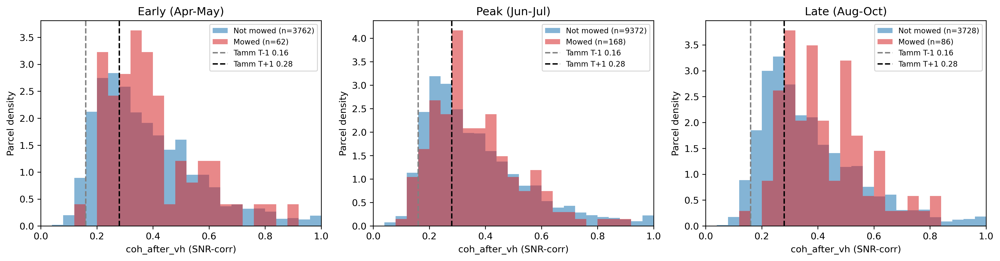
4.2 Feature Importance and Selection
Figure 4.2 and Figure 4.3 show the permutation importance of all candidate features for Group A (26 features, no coherence) and Group B (28 features, including coherence). In both groups, optical vegetation index features occupy the top ranks, while GRD backscatter features and absolute coherence values show negligible or negative importance.
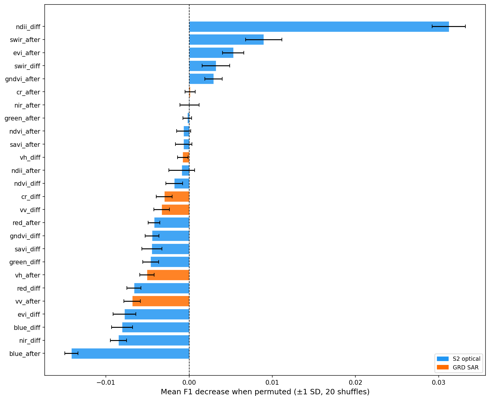
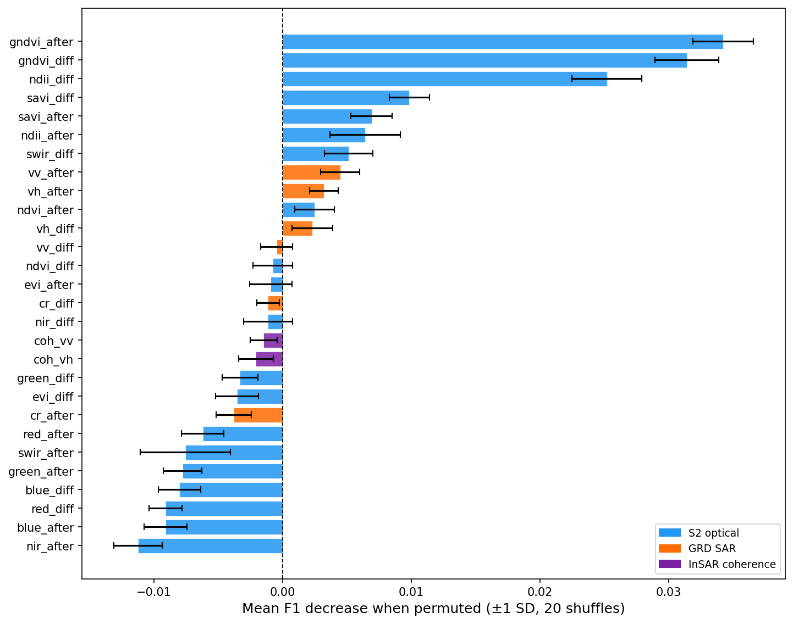
In Group A, ndii_diff is the single dominant predictor, followed by swir_after, evi_after, and swir_diff. No GRD feature reaches above near-zero importance. In Group B, the ranking shifts substantially: gndvi_after and gndvi_diff become the two strongest predictors, while ndii_diff drops to rank three. Features such as gndvi_diff, which shows negative importance in Group A, appear among the most informative in Group B. The coherence values (coh_vv, coh_vh) show negative near-zero importance. The final feature sets for each model configuration were derived from these rankings in combination with domain knowledge, as described in Section 3.4.
4.3 Test-Set Classification Performance
Table 4.2 summarises the test-set performance of all 24 model configurations across both groups. The F1 comparison across all configurations is shown in Figure 4.4.
| Configuration | n | F1 | Precision | Recall | AUC | Group |
|---|---|---|---|---|---|---|
| S2-only best RF | 5 | 0.920 | 0.925 | 0.919 | 0.954 | A |
| S2-only best SVM | 5 | 0.923 | 0.929 | 0.922 | 0.962 | A |
| S2-only best LGBM | 5 | 0.915 | 0.919 | 0.915 | 0.951 | A |
| S2-only diff RF | 3 | 0.914 | 0.920 | 0.913 | 0.942 | A |
| S2-only diff SVM | 3 | 0.920 | 0.927 | 0.920 | 0.955 | A |
| S2-only diff LGBM | 3 | 0.910 | 0.916 | 0.910 | 0.947 | A |
| GRD-only RF | 4 | 0.528 | 0.529 | 0.541 | 0.524 | A |
| GRD-only SVM | 4 | 0.467 | 0.528 | 0.557 | 0.530 | A |
| GRD-only LGBM | 4 | 0.522 | 0.526 | 0.542 | 0.523 | A |
| S2+GRD RF | 9 | 0.919 | 0.925 | 0.919 | 0.955 | A |
| S2+GRD SVM | 9 | 0.913 | 0.919 | 0.913 | 0.963 | A |
| S2+GRD LGBM | 9 | 0.910 | 0.914 | 0.910 | 0.952 | A |
| Coh-only RF | 2 | 0.478 | 0.504 | 0.475 | 0.481 | B |
| Coh-only SVM | 2 | 0.468 | 0.509 | 0.471 | 0.481 | B |
| Coh-only LGBM | 2 | 0.479 | 0.502 | 0.476 | 0.477 | B |
| S2 best+Coh RF | 7 | 0.910 | 0.911 | 0.910 | 0.940 | B |
| S2 best+Coh SVM | 7 | 0.887 | 0.888 | 0.887 | 0.936 | B |
| S2 best+Coh LGBM | 7 | 0.881 | 0.881 | 0.881 | 0.930 | B |
| S2 diff+Coh RF | 5 | 0.861 | 0.869 | 0.860 | 0.900 | B |
| S2 diff+Coh SVM | 5 | 0.841 | 0.844 | 0.840 | 0.892 | B |
| S2 diff+Coh LGBM | 5 | 0.859 | 0.867 | 0.858 | 0.875 | B |
| Full-fusion RF | 11 | 0.922 | 0.924 | 0.922 | 0.952 | B |
| Full-fusion SVM | 11 | 0.859 | 0.859 | 0.859 | 0.919 | B |
| Full-fusion LGBM | 11 | 0.892 | 0.893 | 0.892 | 0.933 | B |
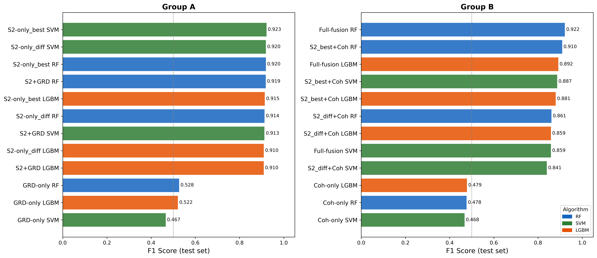
Within Group A, the S2-only configurations achieve the highest F1-Scores, with the SVM reaching 0.923 using five optical features. Reducing the feature set to only the three difference features (ndii_diff, gndvi_diff, swir_diff) produces a minimal drop to 0.920. Adding GRD backscatter features to the optical set does not improve performance: the S2+GRD RF achieves 0.919, marginally below the S2-only baseline. The GRD-only configurations achieve F1-Scores between 0.467 and 0.528, near the random baseline.
Within Group B, the Full-fusion RF achieves the highest F1-Score of 0.922, followed by S2_best+Coh RF at 0.910. Coherence-only models perform near random (F1 between 0.468 and 0.479). The S2_diff+Coh configurations, which combine S2 difference features with coherence, achieve lower F1-Scores (0.841 to 0.861) than the S2_best+Coh configurations that include absolute post-event index values (0.899 to 0.910).
The choice of classifier has a smaller effect on performance than the choice of features. Across Group A, the spread between the best and worst algorithm for a given feature set is typically less than 0.01 F1. In Group B, the spread is larger, particularly for the Full-fusion configuration where RF (0.922) substantially outperforms SVM (0.859).
Figure 4.5 shows the confusion matrix and ROC curve for the best-performing Group A model (S2-only_best SVM). The model achieves an AUC of 0.962, with the confusion matrix showing that the majority of errors are false negatives (571) rather than false positives (83), indicating a conservative classification tendency at the default threshold. The Confusion matrices and ROC curves for all other model configurations are provided in Appendix A.
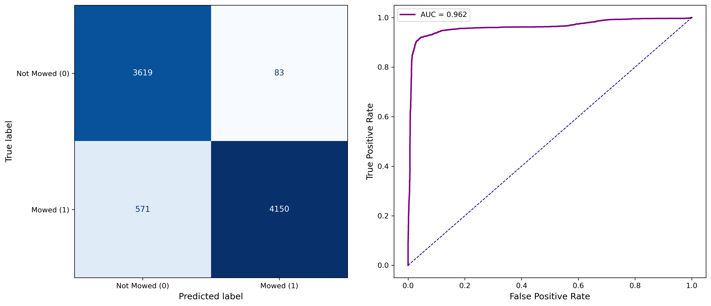
4.4 Scene-Level Threshold Calibration
The LOO-calibrated thresholds for all evaluated models are reported in Table 4.3. For all S2-based models, the calibrated thresholds range from 0.775 (Full-fusion RF) to 0.950 (S2_best+Coh RF), substantially above the default of 0.5. The coherence-only and GRD-only models show the opposite pattern, with calibrated thresholds at or near 0.1.
| Model | Calibrated threshold |
|---|---|
| S2-only_best RF | 0.925 |
| S2-only_best SVM | 0.875 |
| S2-only_diff RF | 0.875 |
| S2-only_diff SVM | 0.900 |
| S2_best+Coh RF | 0.950 |
| S2_diff+Coh RF | 0.850 |
| S2+GRD RF | 0.800 |
| Full-fusion RF | 0.775 |
| Coh-only RF | 0.100 |
| Coh-only SVM | 0.325 |
| GRD-only RF | 0.100 |
The effect of threshold calibration is illustrated in Figure 4.6, which compares predictions on scene 46 using the model S2-only_diff SVM with the default threshold (t = 0.50) and the calibrated threshold (t = 0.875), both without postprocessing. At the default threshold, the model achieves high recall (0.881) but low precision (0.327). The calibrated threshold raises precision to 0.499 and improves the F1-Score from 0.477 to 0.587, while recall decreases to 0.712. In the figure it is clearly visible that the threshold calibration removes many of the scattered false positives, reducing salt-and-pepper noise and at the same time causing the model to miss some true positives.
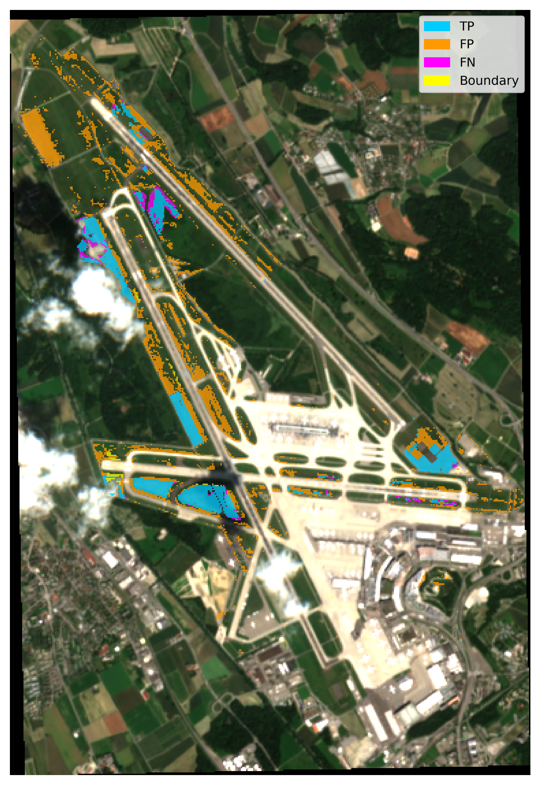
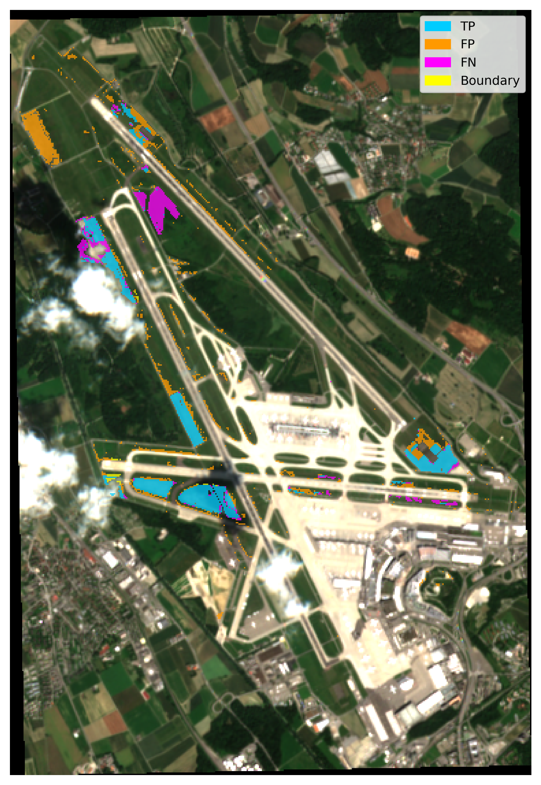
4.5 Effect of Spatial Postprocessing
Table 4.4 shows the best configuration from each method category alongside the baseline without postprocessing.
| Method | F1 | ΔF1 | Disk r | Min. area | Median size | Segments | Compact. |
|---|---|---|---|---|---|---|---|
| Median + Morphological | 0.602 | 0.005 | 1 | 4 | 3 | — | — |
| Morphological only | 0.599 | 0.001 | 1 | 2 | 0 | — | — |
| No postprocessing | 0.597 | 0.000 | — | — | — | — | — |
| Median + Morphological + SLIC | 0.239 | −0.359 | 1 | 6 | 5 | 400 | 0.1 |
| Morphological + SLIC | 0.239 | −0.359 | 1 | 6 | 0 | 400 | 0.1 |
The overall effect of postprocessing on the F1-Score is small. The best-performing configuration, a median filter with a window size of 3x3 followed by morphological opening and closing with a disk radius of 1 pixel and a minimum component area of 4 pixels, achieved a mean F1 of 0.602 across the six calibration scenes, an improvement of +0.005 over the unprocessed baseline (0.597). Morphological operations alone produced a negligible increase of +0.001. Configurations involving SLIC superpixel aggregation performed drastically worse, dropping to F1-Scores around 0.239.
The effect of postprocessing also varies across scenes, as shown in Figure 4.7. For three of the six calibration scenes, the best postprocessing configuration produced a modest improvement in F1-Score, while for the other three scenes it resulted in a slight decrease.
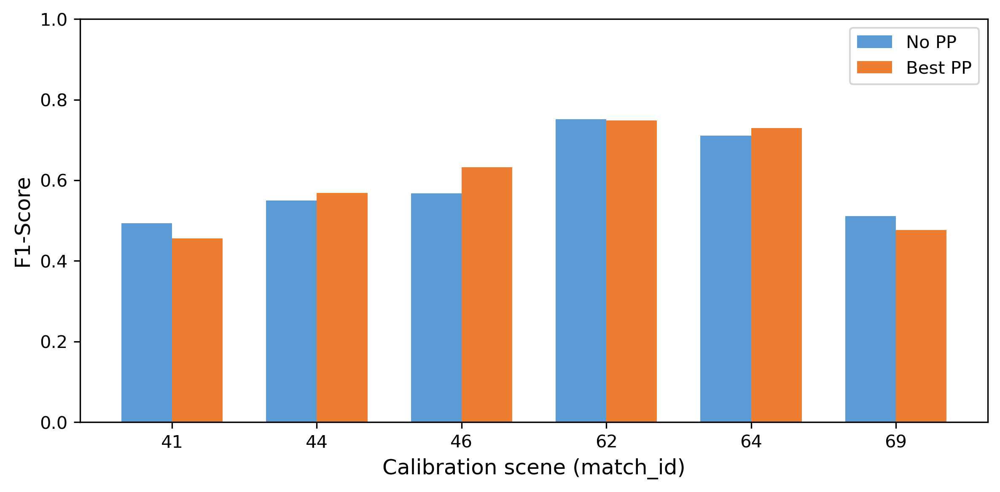
Figure 4.8 illustrates the spatial effect of postprocessing on a single scene (match_id 46). The raw prediction (F1 = 0.567 ) contains scattered false positive pixels. After postprocessing (F1 = 0.632), these isolated detections are removed, producing cleaner parcel boundaries and reducing the false positive area. The false negative regions (magenta) remain largely unchanged.
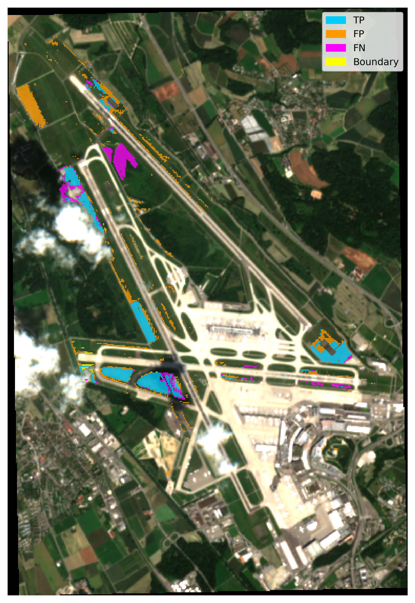
4.6 Operational Scene Application
Table 4.5 reports the operational performance of the 11 selected models on held-out scenes 12 and 73.
| Scene | Model | F1 raw | F1 PP | P raw | P PP | R raw | R PP |
|---|---|---|---|---|---|---|---|
| 12 | s2 only diff svm | 0.689 | 0.674 | 0.675 | 0.727 | 0.703 | 0.629 |
| 12 | s2 only best svm | 0.667 | 0.673 | 0.624 | 0.703 | 0.716 | 0.645 |
| 12 | full fusion rf | 0.675 | 0.669 | 0.768 | 0.862 | 0.602 | 0.547 |
| 12 | s2 only diff rf | 0.642 | 0.655 | 0.656 | 0.795 | 0.629 | 0.556 |
| 12 | s2 grd rf | 0.638 | 0.614 | 0.827 | 0.903 | 0.520 | 0.465 |
| 12 | s2 diff coh rf | 0.628 | 0.605 | 0.728 | 0.880 | 0.552 | 0.461 |
| 12 | pw2 svm ndii | 0.597 | 0.597 | 0.470 | 0.470 | 0.817 | 0.817 |
| 12 | s2 only best rf | 0.502 | 0.399 | 0.709 | 0.860 | 0.389 | 0.260 |
| 12 | s2 best coh rf | 0.314 | 0.231 | 0.845 | 0.983 | 0.193 | 0.131 |
| 12 | coh only rf | 0.200 | 0.211 | 0.111 | 0.118 | 0.989 | 0.990 |
| 12 | coh only svm | 0.199 | 0.209 | 0.111 | 0.117 | 0.999 | 0.991 |
| 12 | grd only rf | 0.199 | 0.208 | 0.111 | 0.116 | 1.000 | 0.991 |
| 73 | s2 grd rf | 0.756 | 0.741 | 0.692 | 0.751 | 0.831 | 0.732 |
| 73 | s2 only best rf | 0.749 | 0.735 | 0.706 | 0.806 | 0.798 | 0.676 |
| 73 | full fusion rf | 0.724 | 0.717 | 0.677 | 0.765 | 0.779 | 0.675 |
| 73 | s2 only best svm | 0.632 | 0.651 | 0.477 | 0.528 | 0.936 | 0.847 |
| 73 | s2 only diff svm | 0.625 | 0.635 | 0.485 | 0.537 | 0.878 | 0.777 |
| 73 | s2 only diff rf | 0.574 | 0.598 | 0.433 | 0.496 | 0.852 | 0.751 |
| 73 | s2 diff coh rf | 0.526 | 0.515 | 0.427 | 0.497 | 0.685 | 0.533 |
| 73 | s2 best coh rf | 0.596 | 0.496 | 0.795 | 0.856 | 0.477 | 0.349 |
| 73 | pw2 svm ndii | 0.397 | 0.397 | 0.251 | 0.251 | 0.938 | 0.938 |
| 73 | grd only rf | 0.198 | 0.199 | 0.110 | 0.111 | 1.000 | 0.917 |
| 73 | coh only svm | 0.198 | 0.198 | 0.110 | 0.111 | 0.997 | 0.915 |
| 73 | coh only rf | 0.197 | 0.197 | 0.109 | 0.111 | 0.985 | 0.903 |
The best-performing model on scene 12 is the S2-only_diff SVM (F1 = 0.689 raw, 0.674 with postprocessing), followed closely by the S2-only_best SVM (0.667 raw, 0.673 with postprocessing) and the Full-fusion RF (0.675 raw, 0.669 with postprocessing). On scene 73, the S2-only_best RF achieves the highest F1 among S2-only models (0.749 raw, 0.735 with postprocessing). The Full-fusion RF performs comparably at 0.717. Across both scenes, the S2-based models consistently outperform all configurations that rely on SAR data alone. GRD-only and coherence-only models achieve F1-Scores around 0.200, with recall near 1.0 and precision near 0.11.
Figure 4.9 shows the coherence-only RF prediction on scene 12. The model predicts almost the entire grassland area as mowed, resulting in an F1-Score of 0.200.
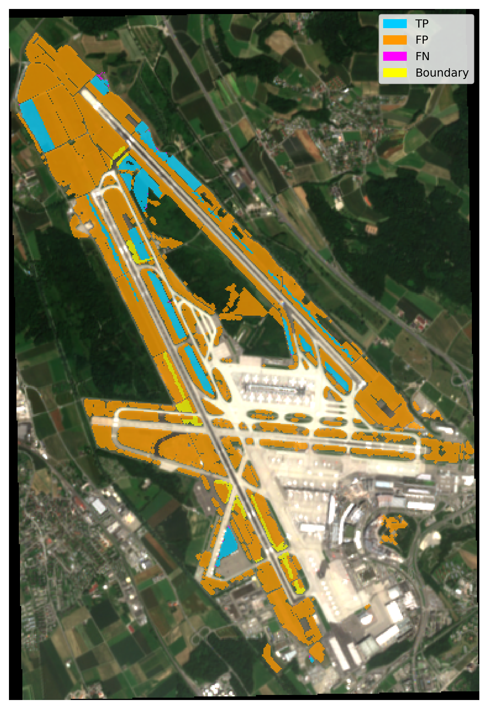
4.6.1 Comparison with PW2 Baseline
To directly assess the improvement over the previous study, the best-performing model from PW2 (SVM using ndii_diff as the sole feature, with a default threshold of 0.5 and no postprocessing) was applied to the same two scenes. On scene 73 (Figure 4.10), the PW2 model achieves an F1-Score of 0.397 with a precision of 0.251 and recall of 0.938. The S2-only_diff SVM, selected as the most stable model across multiple scenes, reaches 0.635, with precision increasing to 0.537 and recall decreasing to 0.777.
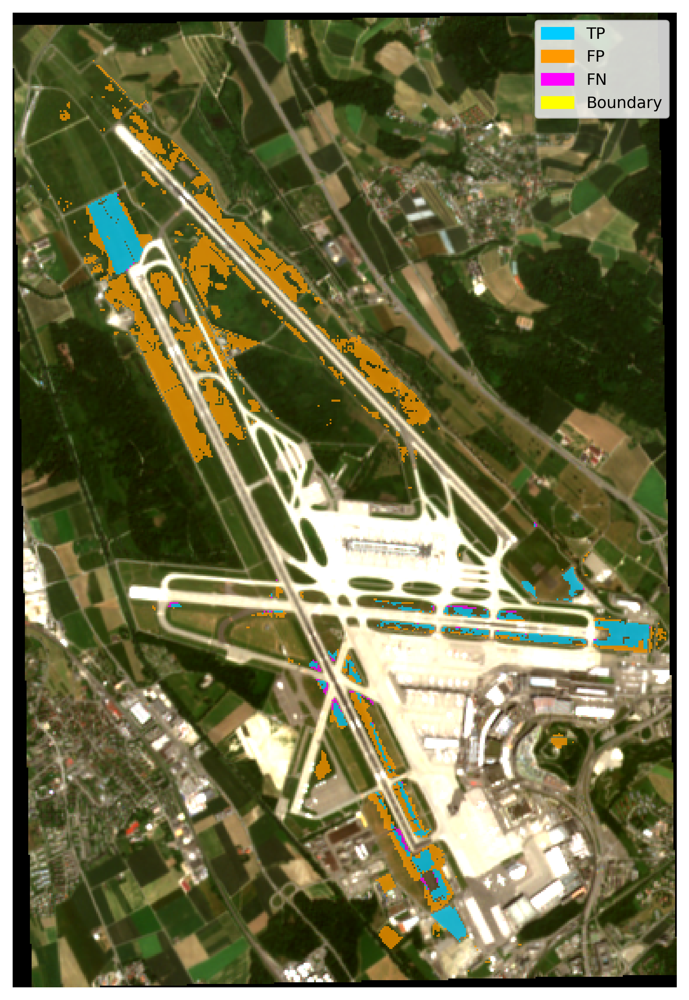
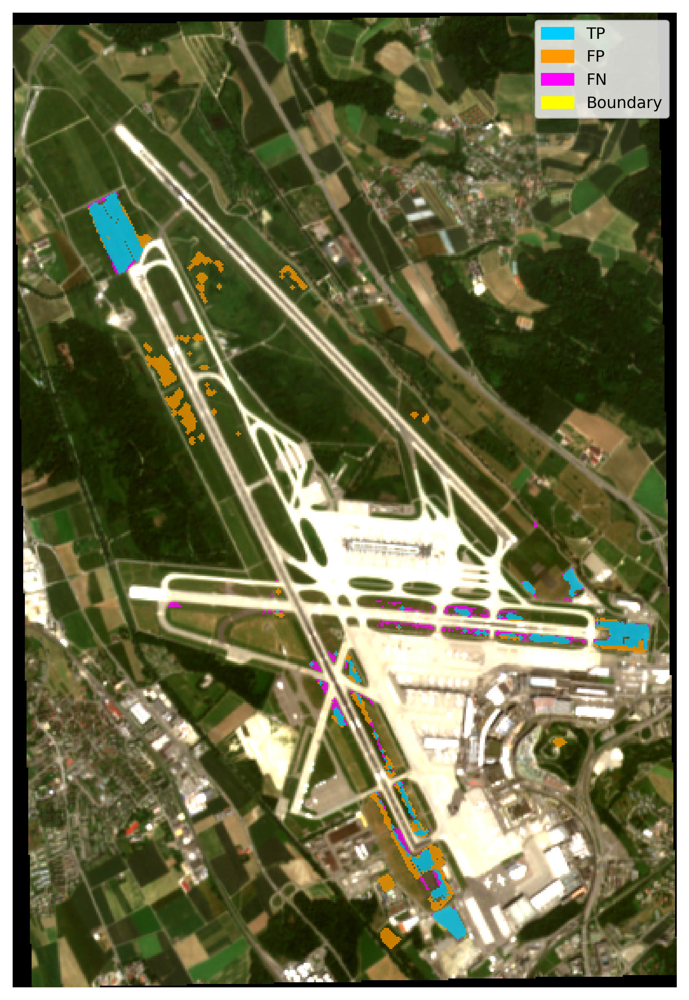
Figure 4.11 shows that on scene 12, the improvement is smaller but consistent: the PW2 model achieves an F1-Score of 0.597 while the best model (S2-only_diff SVM) reaches 0.674.
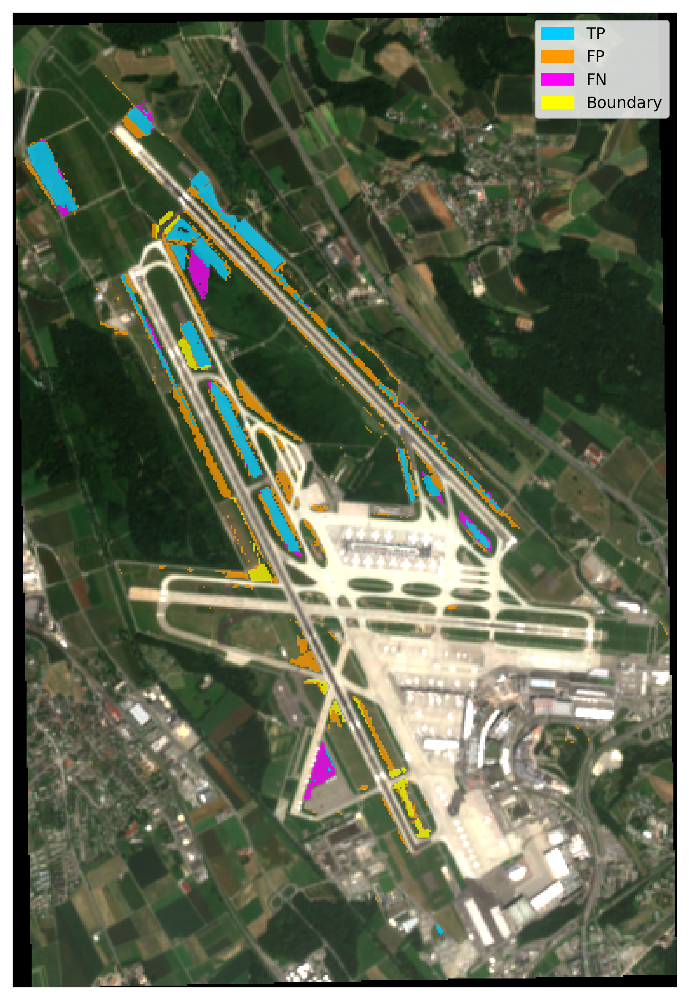
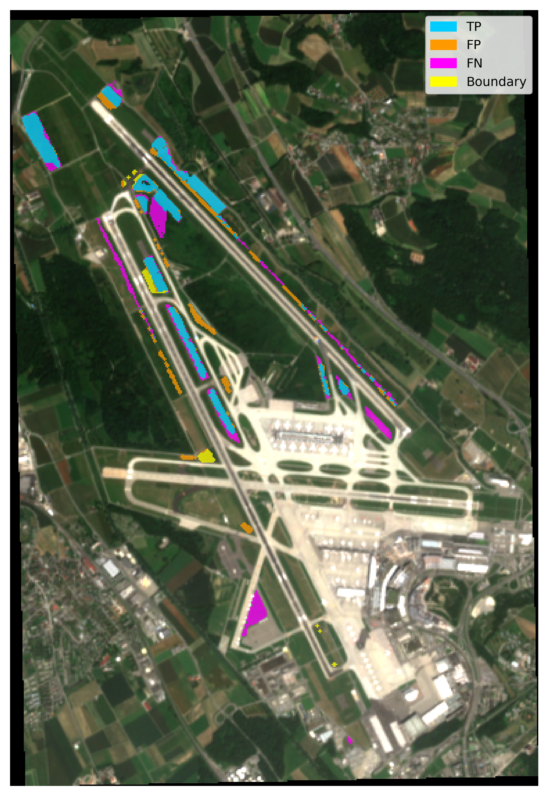
4.6.2 Non-Event Control
Figure 4.12 shows the control test results for scene 46, where the model was applied to the non-event window (\(t_{n-2}\) to \(t_{n-1}\)) alongside the standard mowing detection window from \(t_{n-1}\) to \(t_{n+1}\). The model correctly predicts no mowing in the non-event window, while detecting the known mowing areas in the event window.
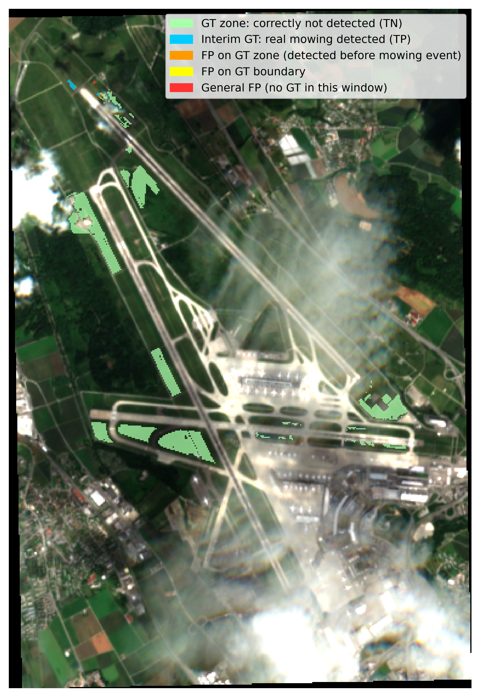
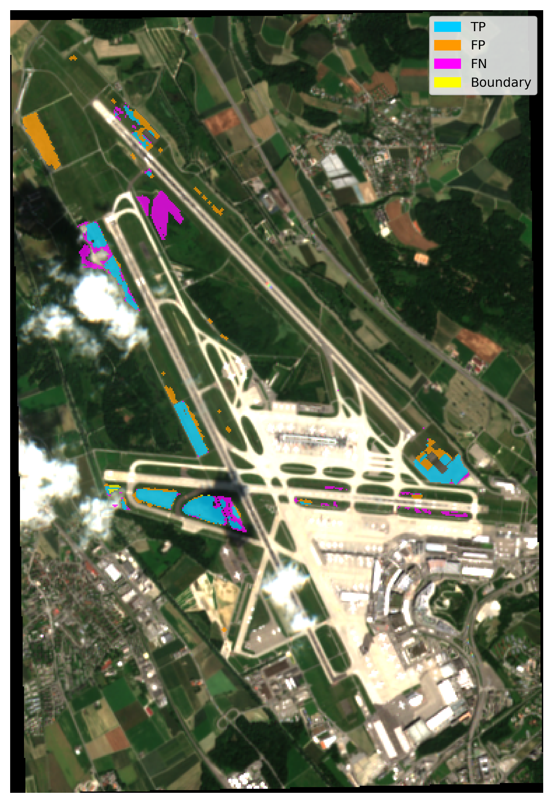
4.7 Generalisation Test
The generalisation test near Lindau (30.04.2025 to 10.05.2025) was conducted over the full scene extent without grassland mask or study area restriction. The evaluation against the four available ground truth polygons yields an F1-Score of 0.511 with a precision of 0.344 and recall of 0.997 (Figure 4.13). The model detects virtually all known mowing pixels (2,032 true positives, 6 false negatives) but also predicts 3,881 pixels as mowed outside the ground truth polygons.
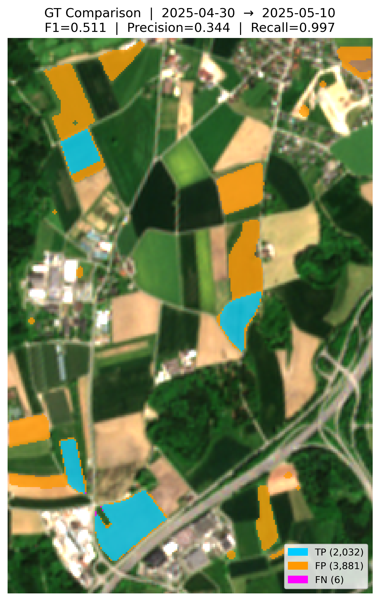
The ground truth covers only four parcels managed by Strickhof and does not account for mowing events on surrounding parcels managed by other farmers. Visual inspection of before and after RGB composites reveals spectral changes in several false-positive areas. Notably, the model does not produce false detections on non-grassland surfaces such as forests, buildings, roads, or bare soil, despite the absence of a land cover mask.